Computer Hardware Maintenance
المهارات الرقمية - الصف الثامن
ويؤدي كل مكون من مكونات الحاسوب دورًا مهما في تشغيل جهاز الحاسوب واستخدام برامجه وتطبيقاته. وقد تتعرض المكونات المادية لأعطال عدة ✓
نظرا للأهمية الكبيرة التي يقدمها جهاز الحاسوب في حياتنا اليومية يجب علينا أن نتخذ الإجراءات كافة التي تحول دون تعطله؛ إما باتباع خطوات استخدام صحيحة ، أو بالاطلاع على طرق الصيانة الخاصة به التي تكفل عدم تعطله لاحقا، فهو مثل الأجهزة الإلكترونية يحتاج لصيانة دورية. وتنوع الأعطال وفقا لمكونات الحاسوب المادية؛ فهناك أعطال مرتبطة بالمكونات الداخلية، وأعطال مرتبطة بالملحقات✓
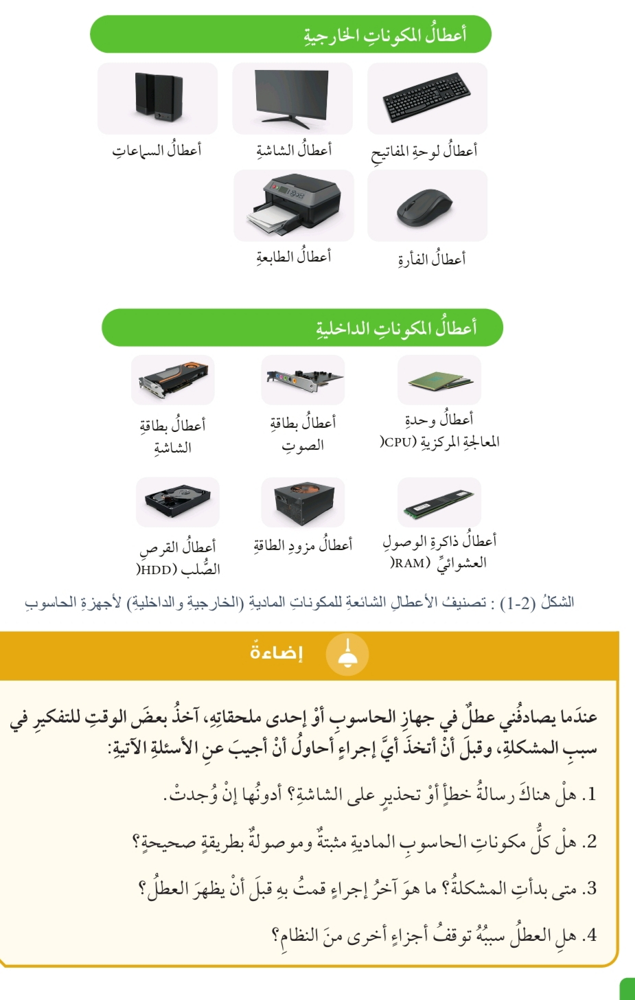
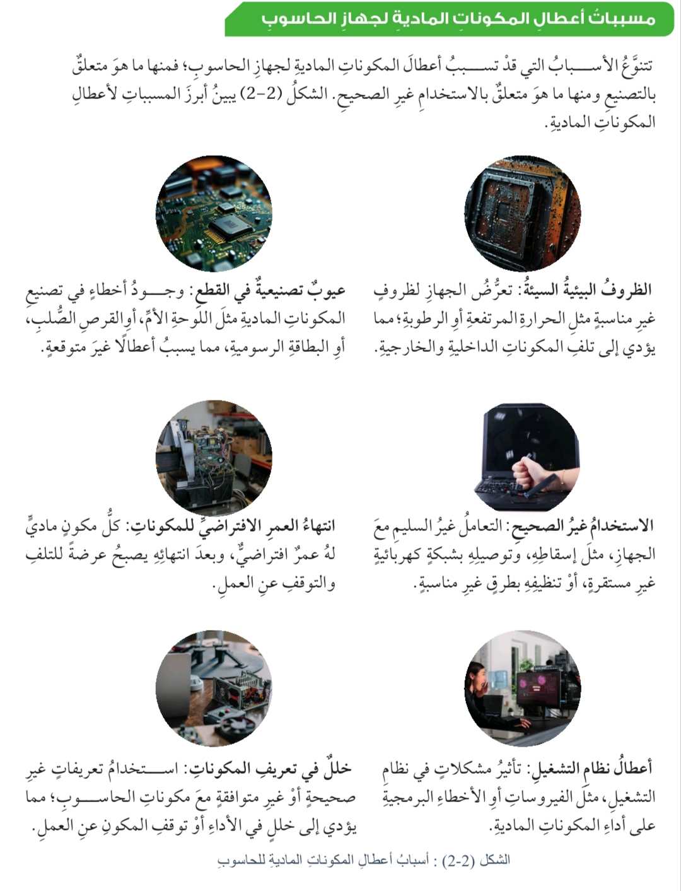
إذا حدث عطل أتتبع الاحداث التي وقفت قبل ظهور العطل مباشرةً، فإن ذلك يساعد ني في تشخيص المشكلة بسرعة وتحديد السبب لها بمجرد تحديد السبب (مثل تثبيت برنامج جديد ، أو تعرض الجهاز لظروف غير ملائمة ) ، أعمل على إزالة هذا السبب أو معالجته ؛ مما يؤدي إلى حل المشكلة بكفاءة .
بحث في المواقع الالكترونية الموثوقة عن مسببات أخرى ألعطال المكونات المادية لجهاز الحاسوب ، وأدون ما أتوصل إليه في ملف - Google Docs، ثم أشاركه مع زملائي
كل مكون من مكونات جهاز الحاسوب له أعطال تختلف وفقا لطبيعته ووظيفته.✓
هي إحدى مكونات الحاسوب الخارجية، صممت لتناسب قبضة اليد وفيها زران أو أكثر موجودة في مقدمتها، ويخرج منها كابل يتصل بجهاز الحاسوب عن طريق أحد منافذه، أو قد تكونُ لاسلكية.
تحويل حركة اليد إلى إشارات يفهمها جهاز الحاسوب كي يحرك المؤشر وفقًا لها.
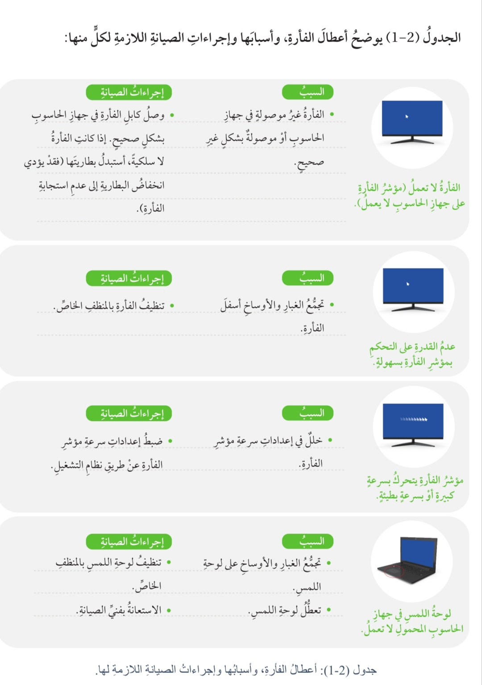
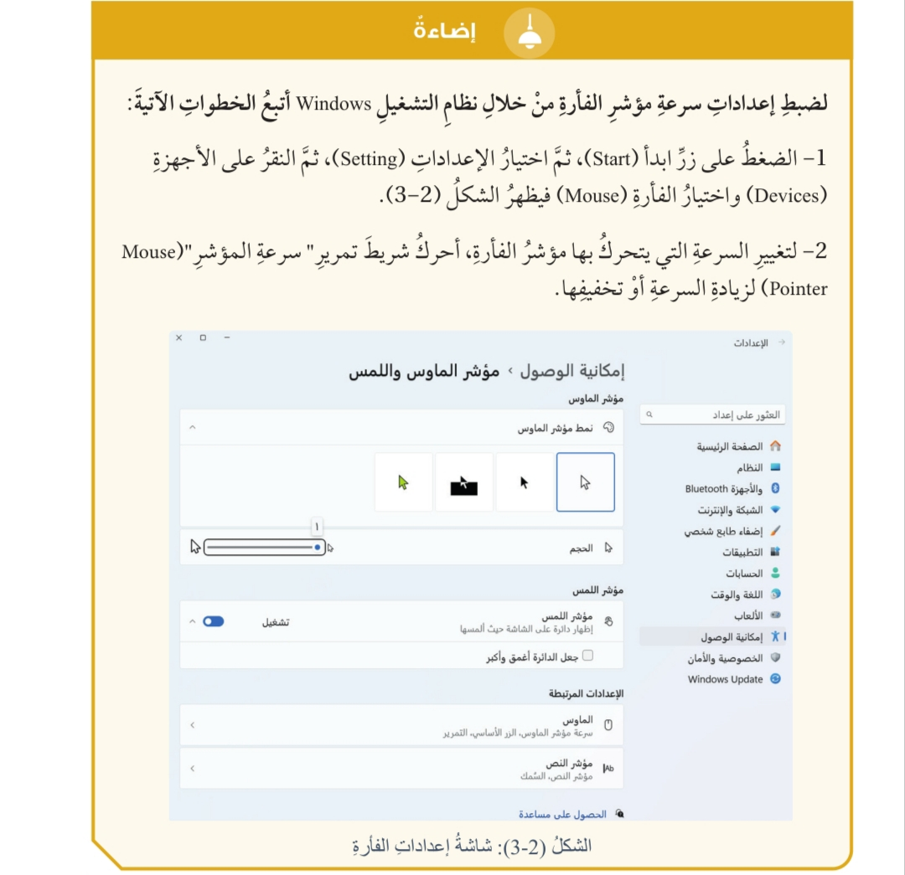
هي وحدة إلكترونية مزودة بأزرار (المفاتيح) ، هذه المفاتيح تمثل الأحرف والأرقام والأسهم والرموز والأوامر.
تتكون لوحة المفاتيح من وحدة إلكترونية مزودة بأزرار (المفاتيح)، هذه المفاتيح تمثل الأحرف والأرقام والأسهم والرموز والأوامر. عند الضغط على أي مفتاح، فإِنَّهُ يرسل إشارةً خاصةً إلى داخل جهاز الحاسوب الذي يفهمها ويظهرها على الشاشة إذا كان المفتاح يمثل حرفًا أو رقما أو رمزًا، أو يستجيب لتأدية وظيفة معينة إذا كان المفتاح يمثل أمرًا.
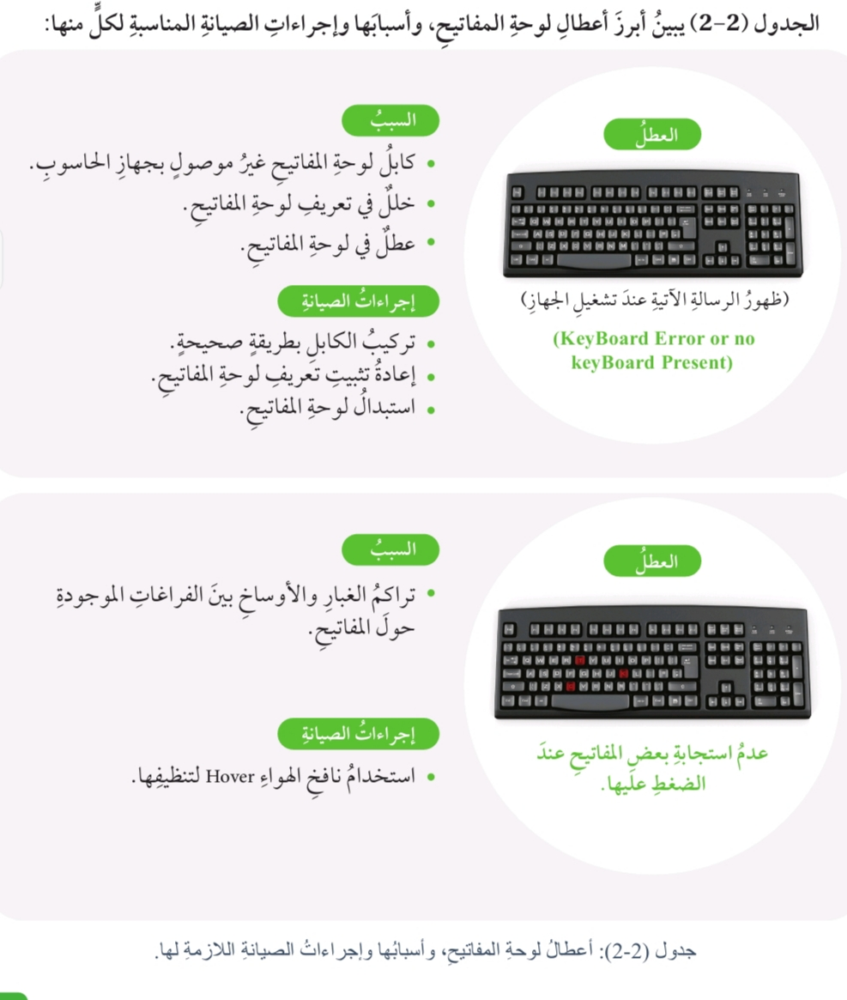
هي التي تعرض المخرجات سواء أكانت بيانات أو صورًا، أو فيديو، أو رسومات، وتعرض أيضًا واجهة المستخدم والبرامج المفتوحة عبر الجهاز.
تحتوي شاشة الحاسوب على شاشة بصرية ودوائر كهربائية مضمنة في صندوق يجمعها. تتصل الشاشة بجهاز الحاسوب من خلال كابل يتصل بمنفذ بطاقة الشاشة،
وتختلف شاشات الحاسوب في مكان وجودها في الجهاز حيث تكون مدمجة فيه في أجهزة الحاسوب المحمولة وتكون منفصلة في أجهزة الحاسوب المكتبية.
بطاقة الشاشة هي البطاقة الإلكترونية التي توضع في أحد شقوق اللوحة الأم في جهاز الحاسوب، وتتضمن منفذا يوصل فيه كابل الشاشة. وتعتمد سرعة أداء البطاقة على الذاكرة بشكل كبير .
وفي ما يأتى أعطال الشاشة وبطاقة الشاشة، وأسبابها وإجراءات الصيانة المناسبة لكلّ منها
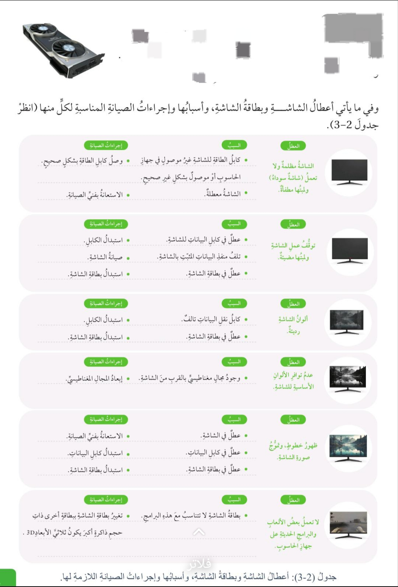
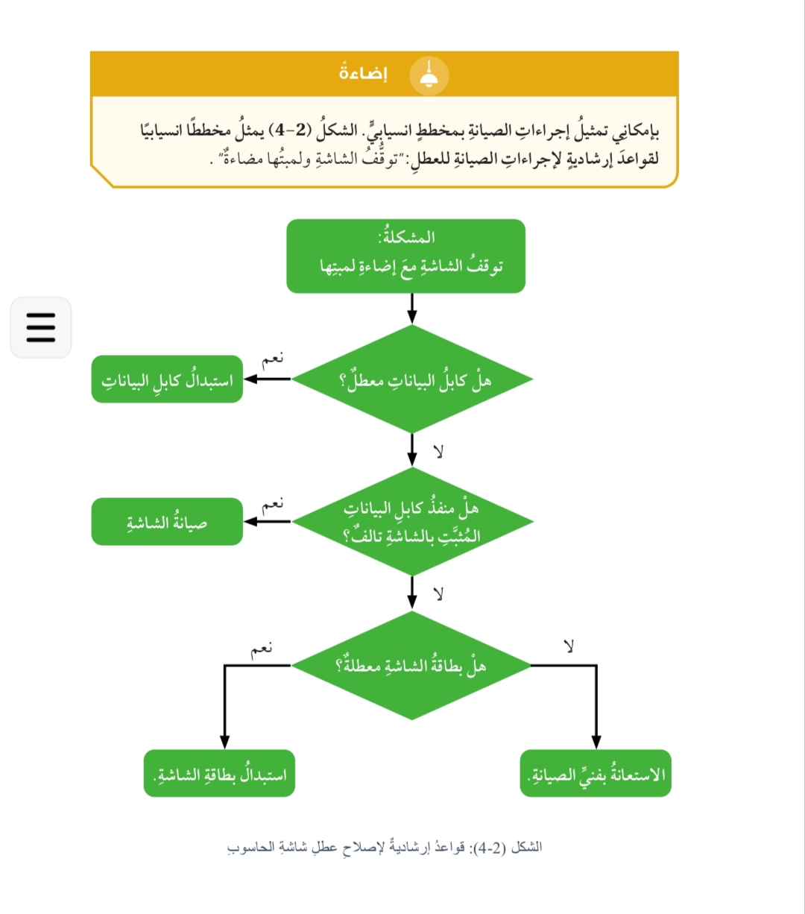
أبحث فى المواقع الإلكترونية الموثوقة عن أسباب الصيانة للعطل صور" معتمةً مع وميض اللمبة ، أدون النتائج في ملف Google Docs ، ثم أشارك النتائج مع زملائي / زميلاتي عبر اللوح التفاعلي الرقمي (Padlet).
الأسباب المحتملة: ضعف التغذية الكهربائية، عطل فى الإضاءة الخلفية أو الإنفرتر تلف الكابلات، مشكلة في كرت الشاشة، أو مكثفات تالفة.
تعمل السماعات على تحويل الإشارات الصوتية المخزنة في الحاسوب إلى صوت يمكن سماعه. وقد تكون السماعات داخلية أو خارجية.
تقوم بطاقة الصوت بإنشاء إشارة صوتية، ثم ترسلها إلى مكبر الصوت في جهاز الحاسوب لإخراجها وتستقبل الصوت من الميكروفون، ثم تحوله إلى بيانات رقمية يمكن تخزينها في ملف صوتي، ويمكنه أيضًا قبول إشارات صوتية رقمية من ملف صوتي، ثم تحويلها إلى إشارات تماثلية يمكن تشغيلها على سماعات جهاز الحاسوب.
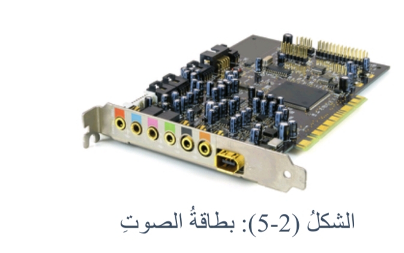
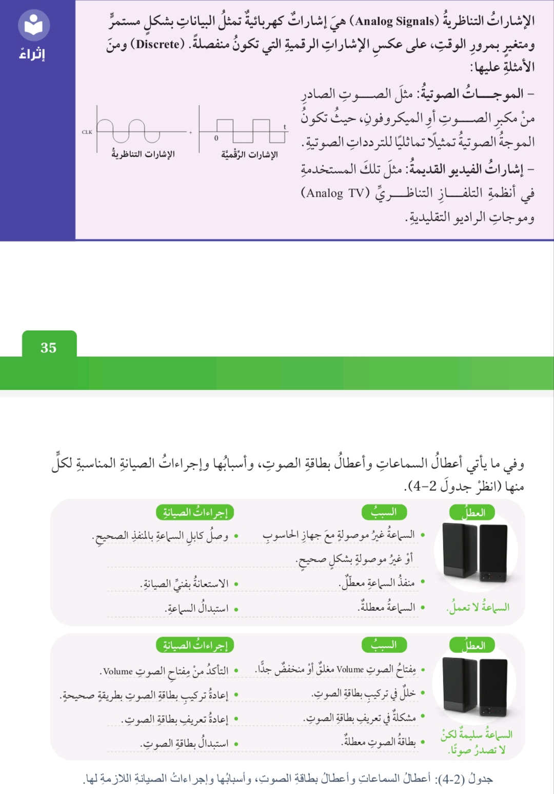
أبحث في المواقع الإلكترونية الموثوقة عن أعطال أخرى للسماعة وبطاقة الصوت
السماعات: لا صوت، تشويش تقطع صوتي، كابلات معيبة، إعدادات Enhancements ، مداخل متسخة. فحص الكابلات تعطيل Enhancements، تنظيف المنافذ.
بطاقة الصوت: لا صوت، تخريب صوتي، اختفاء الخدمة، تعريفات تالفة، تعارض موارد، توقف خدمات صوتية. تحديث / إعادة التعريف فحص تعارضات إعادة تشغيل الخدمات.
تعمل الطابعة على تحويل البياناتِ الرَّقْمية إلى نُسخ مطبوعة على الورق. تستخدم الطابعات الحبر لإنشاء صور ونصوص عن طريق ترسيب قطرات أو جزيئات صغيرة على الورق بنمط معين، يمكن أن يكون إخراج النتائج بالأبيض والأسود أو بالألوان حسب نوع الطابعة والحبر المستخدم.
يمكن أن يكون إخراج النتائج بالأبيض والأسود أو بالألوان حسب نوع الطابعة والحبر المستخدم ✓
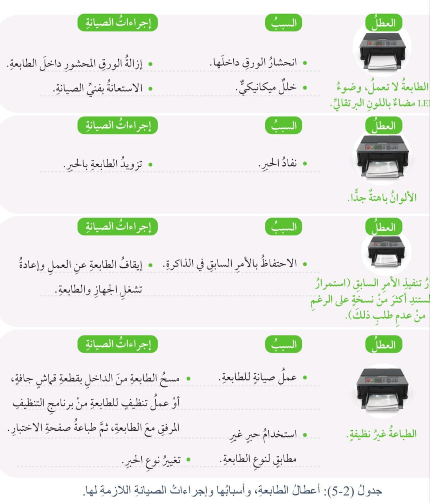
أبحث في أسباب وإجراءات الصيانة للعطل " الطابعة تطبع معلومات ورموزا غير مفهومة"، ثم أستخدم برنامج Draw.io لرسم مخطط انسيابي يتضمن قواعد إرشادية لإجراءات الصيانة، ثمّ أشاركه مع زملائي زميلاتي في الصف عن طريق اللوح التفاعلي الرقمي (Padlet).
تعمل الذاكرة الرئيسة على تخزين البيانات والمعلومات داخل جهاز الحاسوب. تنقسم الذاكرة الرئيسة إلى نوعين هما:
هي دائرة متكاملة مركبة من ملايين الخلايا التي يكونُها اتحاد الترانزستورات والمكثفات، وهي تستخدم في تخزين البيانات المؤقتة التي يحتاج إليها جهاز الحاسوب في أثناء استخدام التطبيقات.
تستخدم في تخزين البيانات المؤقتة التي يحتاج إليها جهاز الحاسوب في أثناء استخدام التطبيقات.
وهي دائرة متكاملة مركبة من ملايين الخلايا التي يكونها اتحاد الترانزستورات والمكثفات، بحيث يشكل كلُّ ترانزيستور ومكثف خليةً واحدةً من خلايا الذاكرة، وكل خلية من هذه الخلايا تعادل 1 بيت (Bit) من البيانات، حيث تمثل (Bit) أصغر وحدة من وحدات قياس الذاكرة، وكلُّ (Bits) تشكل 1 (Byte)، الذي يمثل المساحة الكافية لتخزين قيمةٍ واحدةٍ (حرف أو رقم أو رمز).
أصغر وحدة من وحدات قياس الذاكرة الذي يمثل المساحة الكافية لتخزين قيمةٍ واحدة (حرف أو رقم أو رمز).
1 Byte تشكل 8 Bits ✓
تستخدم في تخزين البيانات الأساسية لتشغيل جهاز الحاسوب ونظام التشغيل، وتتميز بأنها ذاكرة غير متطايرة، أي أنّها تحتفظ بالبيانات حتى بعد انقطاع التيار وهي دائرة متكاملة مبرمجة مسبقا ببيانات خاصة عند التصنيع.
تستخدم في تخزين البيانات المؤقتة التي يحتاج إليها جهاز الحاسوب أثناء استخدام التطبيقات، وهي ذاكرة متطايرة.
تستخدم في تخزين البيانات الأساسية لتشغيل جهاز الحاسوب ونظام التشغيل، وهي ذاكرة غير متطايرة تحتفظ بالبيانات حتى بعد انقطاع التيار.
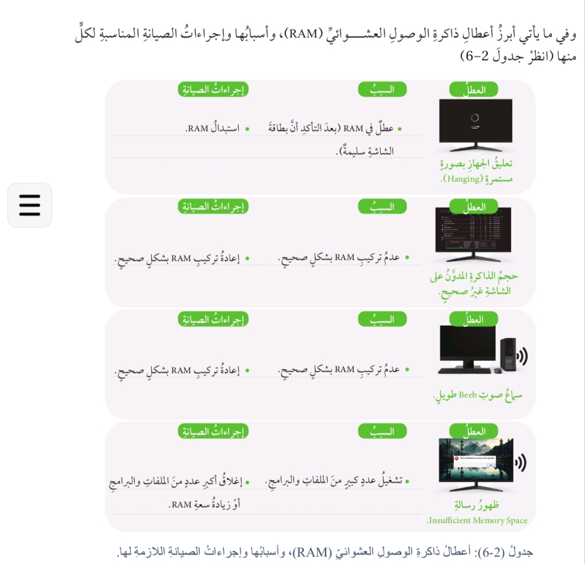
عند تشغيل جهاز الحاسوب وخلال الفحص التشغيلي POST ظهرت الرسالة: Memory Test Fail) ثم يتوقف الجهاز عن التشغيل.
السبب غالبًا تركيب خاطئ أو تلف في شرائح RAM، والإجراء الأنسب هو إعادة تركيب أو استبدال الذاكرة وفحص توافقها مع الجهاز.
هي قراءة الملفات والبرامج المخزنة على الأقراص المدمجة وتشغيلها على جهاز الحاسوب، ويمكن استخدامه أيضًا لنسخ البيانات على أقراص الـ CD أو DVD، حسب نوع المشغل.
وتتم عملية النسخ بوساطة شعاع من الليزر لإحداثِ علامات على سطح القرص الضوئي بوساطة رؤوس الكتابة على السطح البلاستيكي للقرص، وتتم عملية القراءة بوساطة رؤوس القراءة عن طريق تسليط شعاع ضوئي وانعكاسه عن سطح القرص.
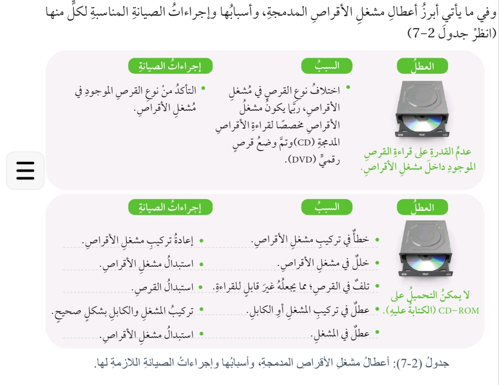
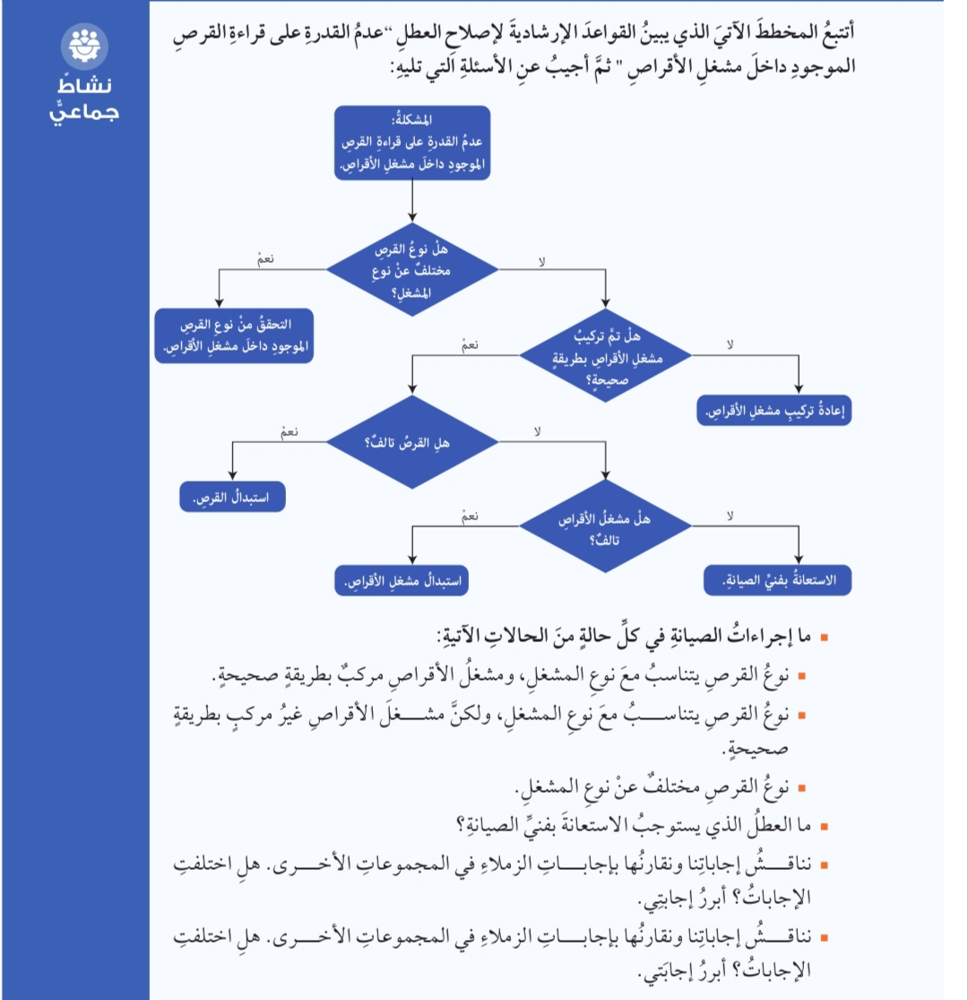
السبب المحتمل: القرص نفسه تالف.
الإجراء: استبدال القرص.
السبب المحتمل: تركيب خاطئ للمشغل.
الإجراء: إعادة تركيب مشغل الأقراص.
السبب المحتمل: عدم توافق.
الإجراء: التحقق من نوع القرص المستخدم والتأكد أنه يناسب المشغل.
عندما يكون مشغل الأقراص نفسه تالفًا.
وحدة المعالجة المركزية هي الجزء الذي يقوم بالعمليات الحسابية والمنطقية في الحاسوب، وهي شريحة من السليكون مغلفة وموصولة باللوحة الأم بطريقة خاصة؛ لتستقبل البيانات من أجزاء الحاسوب المختلفة وتعالجها، ثم ترسل النتائج إلى أجزاء أخرى لإخراجها أو تخزينها.
وهي شريحة من السليكون مغلفة وموصولة باللوحة الأم بطريقة خاصة؛ لتستقبل البيانات من أجزاء الحاسوب المختلفة وتعالجها، ثم ترسل النتائج إلى أجزاء أخرى لإخراجها أو تخزينها، ولها الدور الرئيس فى تحديد قوة جهاز الحاسوب وسرعته.
يوجد داخل المعالج ملايين الترانزسترات التي تؤدي بمجملها عمل المعالج، ونظرًا للترددات العالية والطاقة الكبيرة التي يستهلكها المعالج، يجب استخدام نظام تبريد متقدم للحفاظ على أداء مستقر ودرجات حرارة منخفضة.
لأنها تستقبل البيانات من أجزاء الحاسوب المختلفة، وتعالجها، ثم ترسل النتائج إلى أجزاء أخرى لإخراجها أو تخزينها.
ونظرًا للترددات العالية والطاقة الكبيرة التي يستهلكها المعالج.
وفي ما يأتي أبرز أعطال وحدة المعالجة المركزية (CPU)، وأسبابها وإجراءات الصيانة المناسبة لكل منها انظر جدول (2)
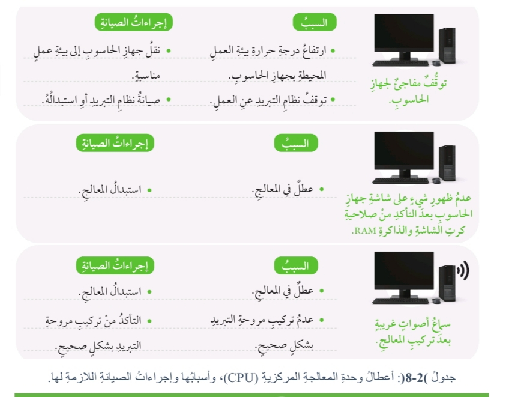
أبحث في المواقع الإلكترونية الموثوقة عن أعطال أخرى لوحدة المعالجة المركزية (CPU) وإجراءات الصيانة لهذه الأعطال، ثم أرسم قواعد إرشادية خاصة بها باستخدام برنامج Draw.io وأشاركه مع زملائی زميلاتي على اللوح التفاعلي الرقمى (Padlet)
تنظيف مكونات التبريد استبدال المعجون الحراري التأكد من توافق المعالج مع اللوحة الأم، واختباره باستخدام أدوات الضغط للتأكد من استقراره.
الجدول (2) يوضح
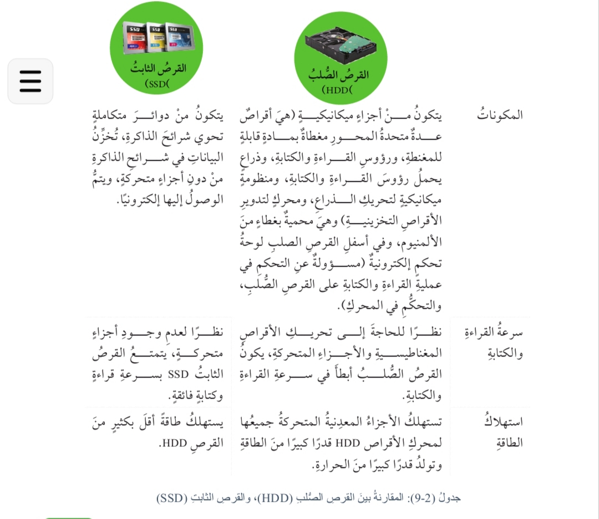
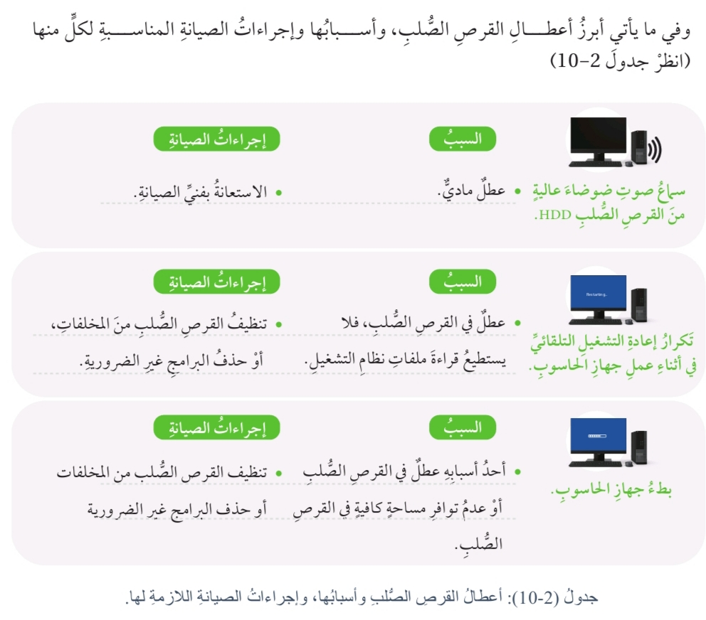
أعطال القرص الصلب نوعان:
عطل برمجي: يحدث بسبب الفيروسات والملفات التالفة؛ فقد يؤدي إغالقُ الملفات بشكل غير صحيح أو إيقاف تشغيل جهاز الحاسوب فجأةً إلى تلف الملفات أو تلف القرص الصلب، ويمكن إصالِحُ هذا العطل عن طريق برامج الصيانة.
عطل مادي: مثل عدم تثبيت كابل البيانات أو كابل الطاقة للقرص الصلب بشكل صحيح، أو يمكن أن يتعرُضَ القرص الصلب للحرارة أو الرطوبة أو الاصطدام؛ مما يؤدي إلى تعطله.
من الأسباب المحتملة لإعادة التشغيل التلقائي:
أناقش مع أفراد مجموعتي الأسباب المحتملة للأعطال:
بسبب تركيبها غير الصحيح أو تلفها أو وجود غبار في المنفذ.
إجراءات الصيانة: إعادة تثبيت الذاكرة وتنظيف المنفذ أو استبدالها إذا كانت تالفة.
إذا كان الورق عالقًا أو غير موضوع بشكل صحيح، أو إذا كانت بكرة السحب متسخة.
إجراءات الصيانة: وضع الورق بشكل صحيح في الطابعة وإزالة أي ورق عالق وتنظيف بكرة السحب.
قد يكون نتيجة خلل في كرت الشاشة أو الكابل أو الشاشة نفسها.
إجراءات الصيانة: فحص كابل الشاشة وإعادة تثبيته أو تجربة شاشة أخرى، وتحديث تعريف كرت الشاشة.
قد يكون السبب من بطاقة الرسوميات أو الكابلات أو مزود الطاقة.
إجراءات الصيانة: التأكد من توصيلات الشاشة، وفحص بطاقة الرسوميات ومزود الطاقة.
يحدث غالبا بسبب ارتفاع حرارة الجهاز، أو خلل في الذاكرة، أو تعريفات غير متوافقة.
إجراءات الصيانة: تنظيف المروحة لتحسين التبريد وفحص الذاكرة ببرامج مخصصة، وتحديث التعريفات.
تكون بسبب الاتساخ أو السطح غير المناسب، أو عطل في المستشعر.
إجراءات الصيانة: تنظيف الفأرة واستخدام لوحة مناسبة وتجربة فأرة أخرى.
قد يكون السبب الغبار أو خلل فى لوحة المفاتيح أو إعدادات التكرار.
إجراءات الصيانة: تنظيف لوحة المفاتيح، وضبط إعدادات التكرار واستبدال اللوحة إذا لزم.
قد تكون فارغة من الحبر أو الحبر جاف أو هناك انسداد في رؤوس الطباعة.
إجراءات الصيانة: تعبئة أو استبدال الحبر في الطابعة، وتنظيف رؤوس الطباعة، وإعادة تثبيت التعريف.